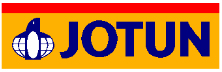

Jotun

Все лакокрасочные покрытия Jotun имеют международные сертификаты. Краски, имеющие распространение в России, получили, также, и необходимые российские сертификаты и отзывы ведущих научно — исследовательских институтов. В России сертифицировано более 100 наименований ЛКМ. Есть заключения следующих институтов: ЦНИИС (Научно-исследовательский институт транспортного строительства), ЦНИИПСК (Научно-исследовательский и проектный институт строительных металлоконструкций им. Мельникова), ВНИИЖТ (Научно-исследовательский институт железнодорожного транспорта), ВНИИСТ и ВНИИГАЗ по нефтегазовой промышленности.
Просим обращаться к специалистам АнКорИнжиниринг для разработки схем покрытий, полным консультациям по продуктам Jotun, поставкам материалов, проведению работ по защите от коррозии, гидроизоляции, огнезащите, теплоизоляции.
|
ALKYDPRIMER (АЛКИДПРАЙМЕР) |
Описание продукта Alkydprimer - грунт на алкидной основе. Этот продукт является частью комплексной системы, имеющей сертификат низкого распространения пламени. Рекомендации по использованию Alkydprimer рекомендуется использовать в качестве грунта для стальных и алюминиевых конструкций как составную часть соответствующей алкидной системы. Максимальная температура использования - 120 оС.
|
|
ALUMINIUM PAINT H.R. (АЛИМИНИУМ ПЭЙНТ Х.Р.) |
Описание продукта Аluminium Paint H.R. - термоустойчивая краска на основе физического высыхания и модифицированного стиролового масла. Рекомендации по использованию Рекомендуется для стальных конструкций, работающих при температуре до 250°С, таких как выхлопные трубы, части двигателей и пр. Может также использоваться как внешнее алюминиевое покрытие, как правило, с алкидными системами. |
|
BALLASTIC BLACK (БАЛЛАСТИК БЛЭК) |
Описание продукта Ballastic Black - толстослойное покрытие на битумной основе, создающее мягкую гибкую пленку. Продукт является частью комплексной системы, имеющей противопожарный сертификат. Рекомендации по использованию Рекомендуется для стальных поверхностей под изоляцией, для коффердамов, водяных танков (не питьевых). Используется для бетона и аналогичных материалов в качестве влагонепроницаемого покрытия. |
|
BALLOXY HB LIGHT (БАЛОКСИ ХБ ЛАЙТ) |
Описание продукта Balloxy HB Light - двухкомпонентное толерантное к поверхности, на основе модифицированных эпоксидов с высоким сухим остатком покрытие серии Мастик. Рекомендации по использованию Balloxy HB Light предназначен для защиты балластных танков, стальных поверхностей под теплоизоляцией, для коффердамов и поверхностей с конденсатом, недоступных для пескоструйной очистки, а также поверхностей, очищенных водой высокого давления. |
|
BALLOXY HB LUMI (БАЛОКСИ ХБ ЛЮМИ) |
Описание продукта Balloxy HB Lumi - двухкомпонентное, толерантное к поверхности, с высоким сухим остатком покрытие серии Mastic. Этот продукт содержит люминесцентный пигмент для облегчения нанесения и инспекции. Рекомендации по использованию Balloxy HB Lumi предназначен для защиты балластных танков, стальных поверхностей под теплоизоляцией, для коффердамов и поверхностей с конденсатом, недоступных для пескоструйной очистки, а также поверхностей, подготовленных очисткой водой высокого давления. |
|
Baltoflake |
Описание продукта Baltoflake- быстросохнущее, армированное стеклянными чешуйками, толстослойное полиэстеровое покрытие, обеспечивающее надежную антикоррозийную защиту в течение длительного времени. Рекомендации по использованию Рекомендуется для стальных конструкций и, в частности, для конструкций, испытывающих экстремальные механические усилия. Также может использоваться для защиты алюминия и бетона (специальные окрасочные схемы). Baltoflake может использоватся в качестве противоскользящего покрытия на палубах,трапах и др.поверхностях. |
|
BARRIER (БАРЬЕР) |
Описание продукта Barrier - двухкомпонентный эпоксидный грунт с высоким содержанием цинка. По предварительному заказу может использоваться цинковый наполнитель марки ASTM D520 Type II. Рекомендации по использованию Barrier рекомендуется использовать в качестве грунта на стальную поверхность после пескоструйной очистки. Barrier используется в системах совместно с другими покрытиями для усиления антикоррозионной защиты. |
|
BARRIER 77 (БАРЬЕР 77) |
Описание продукта Barrier 77 - двухкомпонентный эпоксидный грунт с высоким содержанием цинка. По предварительному заказу может использоваться цинковый наполнитель марки ASTM D520 Type II. Рекомендации по использованию Barrier 77 рекомендуется использовать в качестве грунта на стальную поверхность после пескоструйной очистки. Barrier77 используется в системах совместно с другими покрытиями для усиления антикоррозионной защиты. |
|
Barrier 80 |
Описание продукта Barrier 80- двухкомпонентный эпоксидный грунт с высоким содержанием цинка. Соответствует требованиям SSPC Paint 20 уровень 2 и ISO 12944. По предварительному заказу может использоваться цинковый наполнитель марки ASTM D520 Type II. Рекомендации по использованию Barrier 80 рекомендуется использовать в качестве грунта на стальную поверхность после пескоструйной очистки. Barrier 80 используется в системах совместно с другими покрытиями для усиления антикоррозионной защиты. |
|
Barrier 90 |
Описание продукта Barrier 90 - двухкомпонентный эпоксидный грунт с высоким содержанием цинка. Соответствует требованиям SSPC Paint 20 уровень 1, BS 4652 и BS 5493, и AS/NZS 3750.9.1994. По предварительному заказу может использоваться цинковый наполнитель марки ASTM D520 Type II. Рекомендации по использованию Barrier 90 рекомендуется использовать в качестве грунта на стальную поверхность после пескоструйной очистки. Barrier 90 используется в системах совместно с другими покрытиями для усиления антикоррозионной защиты. |
|
Barrier ZEP |
Описание продукта Barrier ZEP двухкомпонентный цинк-эпоксидный грунт. По предварительному заказу может использоваться цинковый наполнитель марки ASTM D520 Type II. Рекомендации по использованию В качестве цинкового грунта на сталь после пескоструйной очистки . Barrier ZEP используется в комбинации со многими системами покрытий для улучшения коррозионной защиты. |
|
Chemflake Classic |
Описание продукта Chemflake Classic - толстослойное,армированное стеклянными чешуйками винилэстеровое покрытие. Рекомендации по использованию Для защиты стали в агрессивной среде. Для максимальной защиты от коррозии и химической защиты при повышенных температурах. Также может использоваться для защиты алюминиевых конструкций и бетона (специально разработанные системы). |
|
CHEMFLAKE SPECIAL (КЕМФЛЭЙК СПЕШИАЛ) |
Описание продукта Chemflake Special - толстослойное винил-эфирное покрытие с добавлением стеклянных чешуек, созданное специально для работы при высокой температуре. Рекомендации по использованию Chemflake Special используется для защиты стали в агрессивных средах, а также для обеспечения максимально коррозионной и химической защиты при воздействии высоких температур. Также может использоваться для защиты алюминиевых конструкций и бетона (специально разработанные системы). |
|
CHEMTECH EPOXY RPIMER (КЕМТЕК ЭПОКСИ ПРАЙМЕР) |
Описание продукта Chemtech Epoxy Primer - двухкомпонентный эпоксидный пигментированный цинкфосфатный грунт, предназначенный для эпоксидных систем футеровки. Рекомендации по использованию Chemtech Epoxy Primer - используется на внутренние поверхности резервуаров. |
|
Chemtech GM Clear |
Описание продукта Chemtech GM Clear - двухкомпонентная не содержащая растворителей эпоксидная система облицовки с использованием стелоткани. Рекомендации по использованию Применяется для облицовки хранилищ где состояние стали , хранимые продуты или другие причины требуют использования облицовки в комбинации с стеклотканевыми матами. |
|
CONSEAL TOUCH-UP (КОНСИЛ ТАЧ-АП) |
Описание продукта Conseal Touch-up быстросохнущий, толстослойный акриловый грунт/верхнее покрытие. Рекомендации по использованию Conseal Touch-up - специально разработанное толстослойное покрытие для контейнеров и т.д. Может наноситься непосредственно на сталь |
|
Hardtop AS |
Описание продукта Hardtop AS - двухкомпонентное полиуретановое верхнее покрытие, обладающее превосходным блеском и цветоустойчивостью. Базы Hardtop AS являются полуфабрикатами и требуют доработки перед использованием. Рекомендации по использованию Рекомендуется в качестве верхнего покрытия для эпоксидных/эпоксидно- мастиковых систем, в которых требуется прочное высококачественное глянцевое верхнее покрытие устойчивое к атмосферному воздействию. Отверждение может происходить при низких температурах.. |
|
Hardtop AS Aluminium |
Описание продукта Hardtop AS Aluminium -двухкомпонентное полиуретановое верхнее покрытие с превосходной сохранностью глянца цвета. Рекомендации по использованию В качестве верхнего покрытия поверх эпоксидных / эпоксимастичных систем, где требуется долговечное полуглянцевое покрытие в агрессивной атмосфере. |
|
Hardtop AS |
Описание продукта Hardtop AS - двухкомпонентное блестящее полиуретановое прозрачное покрытие, обладающее превосходным блеском. Рекомендации по использованию Рекомендуется в качестве прозрачного покрытия для полиуретановых систем, в которых требуется прочное высококачественное блестящее верхнее покрытие устойчивое к агрессивной среде. |
|
Hardtop Flexi |
Описание продукта Hardtop Flexi - двухкомпонентное, эластичное полиуретановое покрытие с высоким сухим остатком, обладающее хорошим блеском и цветоустойчивостью.Базы являются полуфабрикатами и требуют доработки перед использованием. Рекомендации по использованию Hardtop Flexi может использоваться в качестве самостоятельной системы в условиях атмосферного коррозионного воздействия класса С2 - С3. Также может применяться в качестве финишного покрытия в условиях атмосферного коррозионного воздействия класса С2 - С4 и С5-I, а также класса С5-M, наносимого на различные грунты, и в качестве ремонтного покрытия, наносимого на старое лакокрасочное покрытие. Hardtop Flexi обладает хорошей ударопрочностью. Объекты, покрашенные Hardtop Flexi, можно штабелировать после непродолжительного времени высыхания. Неотъемлемым свойством данного продукта является хорошая антикоррозионная защита. Hardtop Flexi целесообразно использовать в качестве самостоятельной системы, когда необходимо нанесение ремонтного финишного покрытия, обладающего антикоррозионными свойствами. |
|
Hardtop Optima |
Описание продукта Hardtop Optima двухкомпонентный полисилоксановый топкоут с отличной сохранностью глянца и цвета. Рекомендации по использованию Применяется в качестве топкоута в большинстве эпоксидных систем, где требуется долговечное, погодоустойчивое покрытие, устойчивое к воздействию широкого спектра агрессивных атмосфер. |
|
HARDTOP PSO (ХАРДТОП ПСО) |
Описание продукта Hardtop PSO - двухкомпонентное полисилоксановое верхнее покрытие, обладающее превосходной цветоустойчивостью и цветопередачей. Рекомендации по использованию Рекомендуется в качестве верхнего покрытия для эпоксидных систем, в которых требуется прочное высококачественное блестящее верхнее покрытие устойчивое к атмосферному воздействию. |
|
Hardtop XP |
Описание продукта Двухкомпонентное, с высоким сухим остатком, алифатическое полиуретановое верхнее покрытие с превосходным глянцем и сохранностью цвета.Базы являются промежуточными и должны быть доработаны перед применением. Рекомендации по использованию Как глянцевое верхнее покрытие поверх эпоксидных систем, где требуется долговечное, погодоустойчивое в широком спектре агрессивных атмосфер, покрытие. |
|
JOTACOTE UNIVERSAL (ЙОТАКОУТ УНИВЕРСАЛ) |
Описание продукта Jotacote Universal - двухкомпонентный, абразиво-устойчивый, с высоким сухим остатком на эпоксидный грунт/верхний слой который может наноситься с большой толщиной сухой пленки. Рекомендации по использованию Универсальный грунт разработанный специально для использования на новострое. Наносится на как самостоятельное покрытие или в составе схемы. Если требуется хороший внешний вид покрытия, рекомендуется наносить верхний отделочный слой. Обеспечивает отличную антикоррозионную защиту как в соленой так и в пресной воде. Jotacote Lumi предназначен для нанесения как первый слой в балластных танках т.к. люминесцентная добавка облегчает нанесение и инспектирование |
|
Jotamastic 80 |
Описание продукта Jotamastic 80 -двухкомпонентное эпокси-мастик покрытие с высоким сухим остатком , толерантное к поверхности. Может наносится с относительно малой толщиной сухой пленки.Используется с различными отвердителями в зависимости от температуры окрашиваемой поверхности: Standard (Std) и Cold Climate/Wintergrade (CC/WG). Рекомендации по использованию Антикоррозионная защита стальных конструкций над/под водой (аллюминиевые версии для использования под водой) , также на стальных поверхностях где пескоструйная очистка не желательна или невозможна. |
|
JOTAMASTIC 87 ALUMINIUM (ЙОТАМАСТИК 87 АЛЮМИНИЕВЫЙ) |
Описание продукта Jotamastic 87 Aluminium - двухкомпонентное, толерантное к поверхности, износостойкое, толстослойное покрытие из серии Mastic с высоким процентом сухого остатка. Используется с различными отвердителями в зависимости от температуры поверхности: Standard (Std) и Cold Climate (CC/Wintergrade (WG). Данный продукт входит в состав системы, имеющей сертификат на нераспространение пламени по поверхности. Рекомендации по использованию Используется для защиты стальных поверхностей, где невозможна пескоструйная очистка, а также для нанесения на влажные поверхности после очистки водой высокого давления, где не требуется поддержание хорошего внешнего вида. Может использоваться отдельно или в сочетании с различными грунтами и финишными покрытиями. Обеспечивает великолепную защиту от коррозии как в соленой так и в пресной воде. При воздействии прямых солнечных лучей может появляться эффект меления. |
|
JOTAMASTIC 87 GF (ЙОТАМАСТИК 87 ГФ) |
Описание продукта Jotamastic 87 GF - двухкомпонентное, толерантное к поверхности, абразивоустойчивое, с высоким сухим остатком эпоксидное покрытие серии Mastic с добавлением стеклянных чешуек. Используется с различными отвердителями в зависимости от температуры окрашиваемой поверхности: Standard (Std) и Cold Climate/Wintergrade (CC/WG). Является частью системы, имеющей сертификат нераспространения пламени. Рекомендации по использованию Используется для защиты стальных поверхностей, где невозможна пескоструйная очистка. Также можно наносить на поверхности, очищенные водой высокого давления, где не требуется сохранение глянца и цвета покрытия. Jotamastic 87 GF может использоваться как самостоятельное покрытие, так и совместно с различными грунтами и финишными покрытиями. Обеспечивает непревзойденную защиту от коррозии как в пресной так и в соленой воде. При воздействии прямых солнечных луче возможно появление эффекта меления. Стеклянные чешуйки улучшают абразивоустойчивость и общую прочность покрытия. |
|
JOTAMASTIC 87 (ЙОТАМАСТИК 87) |
Описание продукта Jotamastic 87 - двухкомпонентное, толерантное к поверхности. абразивоустойчивое, толстослойное с высоким сухим остатком эпоксидное покрытие серии Mastic. Используется с различными отвердителями, в зависимости от температуры окрашиваемой поверхности: Standard (Std) и Cold Climate/Wintergrade (CC/WG). Является частью системы, имеющей сертификат нераспространения пламени. Рекомендации по использованию Используется для защиты стальных поверхностей, где невозможна пескоструйная очистка. Также можно наносить на поверхности, очищенные водой высокого давления, где не требуется сохранение глянца и цвета покрытия. Jotamastic 87 может использоваться как самостоятельное покрытие, так и совместно с различными грунтами и финишными покрытиями. Обеспечивает непревзойденную защиту от коррозии как в пресной так и в соленой воде. При воздействии прямых солнечных лучей возможно появление эффекта меления. |
|
Jotatemp 650 |
Описание продукта Jotatemp 650 - высокомолекулярное однокомпонентное покрытие на основе инертной мультиполимерной матрицы, разработанное для обеспечения защиты от коррозии конструкций, подверженных воздействию экстремально высоких и/ или экстремально низких температур. Рекомендации по использованию Защита от коррозии изолированной и неизолированной углеродистой и нержавеющей стали, работающей при температуре поверхности от криогенной до 650ºC (кратковременно до 720ºC), включая циклическое изменение температуры от -185ºC до 540ºC. Jotatemp 650может наноситься на горячую подложку (до 260ºC). Особенно подходит для защиты от коррозии под изоляцией во время строительства и при падении/ снижении температуры. |
|
JOTUN ANTI-SKID (ЙОТУН АНТИ-СКИД) |
Описание продукта Jotun Anti-Skid - оксид алюминия, предназначен для нанесения на финишный слой в противоскользящих системах. Существует два типа размера частиц: Medium и Fine. Рекомендации по использованию Используется для палуб, полов, сходней и других участков, где требуется дополнительное трение. Рассеивание необходимо проводить сразу же после нанесения покрытия. |
|
MAMMUT PRIMER (МАММУТ ПРАЙМЕР) |
Описание продукта Mammut Primer - толстослойный грунт на уретан-алкидной основе. Данный продукт является частью системы, имеющей сертификат о нераспространении пламени. Рекомендации по использованию Используется для защиты стальных конструкций в комбинации с алкидной системой. |
|
MAMMUT TOPCOAT (МАММУТ ТОПКОАТ) |
Описание продукта Mammut Topcoat - толстослойное уретановое покрытие на алкидной основе. Данный продукт является частью системы, имеющей сертификат о нераспространении пламени. Рекомендации по использованию Используется в качестве финишного слоя на Mammut Primer или на другие грунты на алкидной основе при окраске стальных конструкций общего морского или промышленного назначения как для внутренних, так и для внешних поверхностей. |
|
MARATHON (МАРАТОН) |
Описание продукта Marathon - двухкомпонентное толстослойное покрытие, с добавлением стеклянных чешуек. Рекомендации по использованию Используется для защиты стальных и бетонных конструкций, эксплуатируемых в условиях агрессивной среды и механических стрессов. Обеспечивает непревзойденную защиту от коррозии и великолепную абразивную устойчивость. Имеется референс-лист по использованию для судов, эксплуатируемых в ледовых условиях. |
|
MARATHON IQ (МАРАТОН АЙ КЬЮ) |
Описание продукта Marathon IQ- практически не содержащее растворитель, абразивоустойчивое, двухкомпонентное эпоксидное покрытие. Рекомендации по использованию Используется для защиты стальных конструкций, подвергающихся экстремальному механическому воздействию, таких, как подводной части судов, эксплуатируемых в ледовых условиях, включая ледоколы. Сертификат: Ледовый класс: является покрытием с низким коэффициентом трения (LR). |
|
MARATHON IQ GF (МАРАТОН АЙ КЬЮ ГФ) |
Описание продукта Marathon IQ GF - практически не содержащее растворитель, абразивоустойчивое, двухкомпонентное эпоксидное покрытие с содержанием стеклянны чешуек. Рекомендации по использованию Используется для защиты стальных конструкций, подвергающихся экстремальному атмосферному и механическому воздействию. Выдерживает большие механические нагрузки. Для максимальной защиты, т.е. для защиты корпусов судов, эксплуатируемых в ледовых условиях, должна применяться однослойная схема окраски. |
|
MEGAFAIR (МЕГАФАИР) |
Описание продукта Megafair - это высококачественная двухкомпонентная, не содержащая растворитель облегченная финишная шпатлевка, которую можно наносить толстым слоем. Данный продукт легко смешивается, обладает прекрасными операционными свойствами и высокой водонепроницаемостью ( по сравнению с другими шпатлевками). Мегафаир обладает высокой адгезией и когезией. Шлифуемость высокая степень прочности Shore D 65-70. Рекомендации по использованию Мегафаир подходит для подводного и надводного применения, в том случае, когда является частью сертифицированной системы окраски Йотун. Может применяться в системе эпоксидных защитных покрытий для металлических, деревянных поверхностей и поверхностей из стеклопластика. Подходит для использования на проектах новостроя или для ремонта уже существующих эпоксидных или полиуретановых покрытий |
|
MEGAFILLER (МЕГАФИЛЛЕР) |
Описание продукта Megafiller - двухкомпонентная, не содержащая растворитель шпатлевка, наносящаяся очень толстым слоем, имеющая малый коэффициент усушки. Ввиду того, что удельный вес Megafiller очень невелик (SG 0,57), нанесение этого материала не повлечет за собой существенного увеличения веса корпуса судна. Благодаря твердой структуре, шпатлевка отлично шлифуется. Рекомендации по использованию Megafiller практически не впитывает воду, поэтому может использоваться для покрытия как надводных, так и подводных частей корпуса судна. Используется как часть эпоксидных систем для защиты металлических, стеклопластиковых и деревянных поверхностей. |
|
MUKI EPS (МУКИ ЕПС) |
Описание продукта Muki EPS - двухкомпонентный быстросохнущий грунт на эпоксидной основе. Рекомендации по использованию 1. Muki EPS используется как межцеховой грунт для нанесения на поверхность после струйной очистки в дробеметной камере для защиты стали на период транспортировки, хранения, обработки и сборки металлоконструкций. 2. Используется в качестве грунта в системах антикоррозионной защиты класса ISO 12944 C2 - C4. 3. Межоперационный грунт для временной защиты стальных поверхностей после струйной очисти. |
|
Muki Z 2001 |
Описание продукта Muki Z 2001 - двухкомпонентный модифицированный цинкэтилсиликатный межоперационный грунт с низким содержанием цинка, разработанный для применения в рамках высокопроизводительной технологии в сочетании с уникальной сварочной технологией (MIG/MAG/G-FCAW). Отличительной особенностью Muki Z 2001 является пониженный риск для здоровья при сварке и резке, а также уменьшение дефектов сварки. Рекомендации по использованию Muki Z 2001 рекомендуется использовать в качестве межоперационного грунта для защиты стали после очистки на дробеметной линии, во время транспортировки, хранения и сборки. |
|
MUKI Z 3000 (МУКИ ЗЭТ 3000) |
Описание продукта Muki Z 3000 - двухкомпонентный модифицированный цинкэтилсиликатный межоперационный грунт со средним содержанием цинка, разработанный для применения в рамках высокопроизводительной технологии в сочетании с уникальной сварочной технологией (MIG/MAG/G-FCAW). Отличительной особенностью Muki Z 3000 является пониженный риск для здоровья при сварке и резке, а также уменьшение дефектов сварки. Рекомендации по использованию Muki Z 2001 рекомендуется использовать в качестве межоперационного грунта для защиты стали после очистки на дробеметной линии, во время транспортировки, хранения и сборки. |
|
Penguard Clear Sealer |
Описание продукта Penguard Clear Sealer - двухкомпонентный прозрачный эпоксидный связующий слой, обладающий превосходными проникающими способностями. Рекомендации по использованию Используется как связующий слой/грунтовка для бетонных и других каменных поверхностей как часть системы защитного покрытия. |
|
PENGUARD CLEAR VARNISH (ПЕНГАРД КЛИА ВАНИШ) |
Описание продукта Penguard CV - двухкомпонентный прозрачный эпоксидный лак. Рекомендации по использованию Используется как герметик для бетонных конструкций, обычно под Penguard Topcoat или как связующее вещество для бетонной пыли. |
|
PENGUARD EXPRESS (ПЕНГАРД ЭКСПРЕСС) |
Описание продукта Penguard Express - быстросохнущее, толстослойное, двухкомпонентное, эпоксидное покрытие с высоким сухим остатком и возможностью нанесения при низких температурах. Рекомендации по использованию Антикоррозионный грунт/промежуточный слой для антикоррозионной защиты стали и других поверхностей от атмосферных воздействий в случая когда требуется быстрое высыхание покрытия/ввода в эксплуатацию. Может использоваться как самостоятельное покрытие так и в комбинации с различными грунтами и финишными покрытиями |
|
PENGUARD EXPRESS ZP (ПЕНГАРД ЭКСПРЕСС ZP) |
Описание продукта Penguard Express - быстросохнущее, толстослойное, двухкомпонентное, эпоксидное покрытие, пигментированное с добавлением фосфата цинка, с высоким сухим остатком и возможностью нанесения толстого слоя пленки при низких температурах. Рекомендации по использованию Антикоррозионный грунт/промежуточный слой для антикоррозионной защиты стали и других поверхностей от атмосферных воздействий в случая когда требуется быстрое высыхание покрытия/ввода в эксплуатацию. Может использоваться как самостоятельное покрытие так и в комбинации с различными грунтами и финишными покрытиями |
|
PENGUARD EXPRESS (ПЕНГАРД ЭКСПРЕСС) |
Описание продукта Penguard Express - быстросохнущее, толстослойное, двухкомпонентное, пигментированное слюдой оксида железа эпоксидное покрытие с высоким сухим остатком и возможностью нанесения при низких температурах. Рекомендации по использованию Антикоррозионный грунт/промежуточный слой для антикоррозионной защиты стали и других поверхностей от атмосферных воздействий в случая когда требуется быстрое высыхание покрытия/ввода в эксплуатацию. Может использоваться как самостоятельное покрытие так и в комбинации с различными грунтами и финишными покрытиями |
|
PENGUARD FC (ПЕНГАРД ФЦ) |
Описание продукта Penguard FC - толстослойное, двухкомпонентное, эпоксидное покрытие с полиамидным отверждением. Данный продукт представлен широкой гаммой цветов, доступной в мультиколорной системе (МСI) компании Йотун. Рекомендации по использованию Penguard FC- эпоксидное финишное покрытие, используемое в том случае, если внешний вид эпоксидного финишного покрытия приемлем. Может использоваться как антикоррозионное покрытие в среде от слабой до умеренной агрессивности для стальных и бетонных конструкций не погруженных в воду и как промежуточный слой в многослойных системах для более агрессивных сред. |
|
Penguard Topcoat |
Описание продукта Penguard Topcoat- двухкомпонентное антикоррозионное финишное эпоксидное покрытие на основе высокомолекулярных смол с полиамидным отвердителем .Является частью комплексных систем,имеющих сертификат нераспостранения пламени. Базы Penguard Topcoat являются полуфабрикатами и требуют колерования перед использованием. Рекомендации по использованию Как финишный слой в эпоксидных системах. Также на бетон, где используются эпоксидные схемы покрытия. |
|
Pilot ACR |
Описание продукта Pilot ACR однокомпонентное быстросохнущее толстослойное акриловое верхнее покрытие. Рекомендации по использованию Pilot ACR может использоваться в качестве самостоятельной системы в условиях атмосферного коррозийного воздействия класса C2. Данный продукт может использоваться в качестве верхнего покрытия в сочетании со многими грунтами. Может применяться при низких температурах. |
|
Pilot II |
Описание продукта Pilot II - финишное покрытие на алкидной основе, предназначенное как для внутренних, так и для наружных поверхностей. Pilot II является частью комплексной системы, имеющей сертификат нераспространения пламени. Базы Pilot IIявляются полуфабрикатами и требуют доработки перед использованием. Рекомендации по использованию Используется как традиционное финишное покрытие в алкидных системах, предназначенных для стальных и деревянных поверхностей. Устойчив к атмосферному воздействию, хорошо сохраняет цвет. Обладает хорошей укрывистостью. |
|
PILOT QD PRIMER (ПИЛОТ КЪЮ Д ПРАЙМЕР) |
Описание продукта Pilot QD Primer - быстросохнущий грунт на алкидной основе с добавлением цинкфосфата как активного антикоррозионного пигмента. Данный продукт является частью комплексной системы, имеющей сертификат нераспространения пламени, IMO FTPC часть 5 (IMO Res. A.653(16))/IMO FTPC Annex 2 пункт 2.2. Рекомендации по использованию Используется как грунт на стальные и алюминиевые поверхности, не подвергающиеся сильному воздействию окружающей среды, где используется алкидная схема. Pilot QD Primer быстро сохнет и выдерживает температуру до 120оС. Применяется в системе с материалами Jotun Steelmaster - продуктами серии огнестойких покрытий. |
|
PIONER PRIMER (ПИОНЕР ПРАЙМЕР) |
Описание продукта Pioner Primer - антикоррозионный грунт на основе хлорполимера. Pioner Primer является частью комплексной системы, имеющей сертификат нераспространения пламени. Рекомендации по использованию Как грунт на стальные или бетонные конструкции, подверженные умеренному воздействию внешней среды. Быстросохнущий, и может использоваться при низких температурах. |
|
Pioner Topcoat |
Описание продукта Pioner Topcoat - финишное покрытие на основе акриловой смолы.Базы Pioner TC являются полуфабрикатами и требуют доработки перед использованием. Рекомендации по использованию Финишное покрытие для стальных или бетонных конструкций, эксплуатируемых в различных климатических условиях, как для внешних, так и для внутренних поверхностей. Устойчив к воздействию воды, нет эффекта мыления. Быстросохнущее покрытие, которое можно использовать при низких температурах. Данный продукт может использоваться как финишный слой на огнеупорные продукты компании Йотун серии Steelmaster. |
|
PRIMASTIC (ПРИМАСТИК) |
Описание продукта Primastic - двухкомпонентное, толерантное к поверхности покрытие на основе модифицированных эпоксидов с высоким процентом сухого остатка. Используется с разными отвердителями для поверхностей с различными температурами: Standard (Std) и Cold Climate/Wintergrade (CC/WG). Рекомендации по использованию Антикоррозионный грунт для металла и бетонных надводных конструкций, а также для стальных поверхностей, где невозможна струйная очистка. |
|
PRIMASTIC UNIVERSAL (ПРИМАСТИК УНИВЕРСАЛ) |
Описание продукта Primastic Universal - двухкомпонентное, толерантное к поверхности покрытие на основе модифицированных эпоксидов с высоким процентом сухого остатка. Используется с разными отвердителями для поверхностей с различными температурами: Standard (Std) и Cold Climate/Wintergrade (CC/WG). Рекомендации по использованию Антикоррозионный грунт для стальных подводных и надводных конструкций, а также для стальных поверхностей, где невозможна струйная очистка. |
|
RESIST 78 (РЕЗИСТ 78) |
Описание продукта Resist 78 - двухкомпонентное быстросохнущее покрытие на основе этилсиликата с высоким содержанием цинка. Resist 78 отвечает требованиям Aramco спецификаций 09-AMSS-071, протестирован в соответствии со стандартом SSPC 20. По предварительному заказу может использоваться цинковый наполнитель марки ASTM D520 Type II. Рекомендации по использованию Resist 78 рекомендуется использовать для защиты стали после пескоструйной очистки. Обычно используется с эпоксидами для достижения оптимальной защиты от коррозии. Выдерживает температуру до 400 оC. |
|
RESIST 86 (РЕЗИСТ 86) |
Описание продукта Resist 86 - двухкомпонентное быстросохнущее этилсиликатное покрытие с высоким содержанием цинка. По предварительному заказу может использоваться цинковый наполнитель марки ASTM D520 Type II. Рекомендации по использованию Resist 86 рекомендуется использовать для защиты стали после пескоструйной очистки. Обычно используется с эпоксидами для достижения оптимальной защиты от коррозии. Выдерживает температуру до 400 оC. |
|
RESIST GTI (РЕЗИСТ ГТИ) |
Описание продукта Resist GTI - двухкомпонентное, отверждающееся в условиях влаги, этилсиликатное покрытие с высоким содержанием цинка отвечает требованиям SSPC Paint 20 level 1 и ISO 12944.. По предварительному заказу может использоваться цинковый наполнитель марки ASTM D520 Type II. Рекомендации по использованию Resist GTI рекомендуется использовать как футеровка для защиты резервуаров для хранения химически активных веществ. Имеется отдельный Resistance list. Также может использоваться как антикоррозионный грунт: 1. как первый слой в многослойной схеме. 2. как самостоятельное покрытие для защиты стали подвергающейся средним коррозионным воздействиям. Выдерживает температуру до 400 о C. |
|
SOLVALITT (СОЛВАЛИТТ) |
Описание продукта Solvalitt - жаростойкое покрытие на основе силикон-акрилового связующего вещества. Рекомендации по использованию Используется в качестве финишного покрытия на поверхностях, подверженных воздействию высоких температур (до 600 оC) в схемах с цинксиликатными покрытиями, max 400 оC. |
|
Solvalitt Zinc |
Описание продукта Solvalitt Zinc - обогащённое цинком покрытие на основе силикона для использования в жаростойких и антикоррозийных системах. Рекомендации по использованию Наносить на сталь, подверженную воздействию высоких температур (выше 400° C). |
|
Steelmaster 60/120 (Стилмастер 60/120) |
Описание продукта Steelmaster 60/120 - высокотехнологичное тонкослойное покрытие вспучивающегося типа для защиты несущих металлоконструкций от пожара, обеспечивающее огнестойкость от 45 минут до 120 минут. Материал однокомпонентный. Рекомендации по использованию и возможности продукта Рекомендуется как для внутренних поверхностей, так и для наружных с продолжительным сроком службы, обеспечивая при этом исключительную стойкость c учётом тяжёлых условий эксплуатации или воздействий внешних факторов окружающей среды. |
|
TANKGUARD 412 (ТАНКГАРД 412) |
Описание продукта Tankguard 412 - не содержащее растворитель, двухкомпонентное эпоксидное покрытие для танков. Данный продукт ранее назывался Jotacote 412. Рекомендации по использованию Tankguard 412 специально разработан для танков питьевой воды. Также можно использовать для защиты от коррозии внутренних поверхностей танков, использующихся для хранения и перевозки сырой нефти, бензинов с разным октановым числом - пожалуйста, для получения консультации обращайтесь в ближайший к Вам офис компании Йотун. |
|
TANKGUARD CV (ТАНКГАРД СиВи) |
Описание продукта Tankguard CV - толстослойное эпоксидное покрытие с высокой проводимостью. Устойчиво к воздействию различных химикатов и растворителей. Рекомендации по использованию Внутренние поверхности танков и резервуаров где требуется антистатичное покрытие. |
|
TANKGUARD HB (ТАНКГАРД ХБ) |
Описание продукта Tankguard HB - толстослойное эпоксидное покрытие с высокой устойчивостью к воздействию различных химикатов и растворителей. Рекомендации по использованию Внутренние поверхности танков и газовых труб. Имеется отдельный Resistance list. |
|
Tankguard SF |
Описание продукта Tankguard SF- не содержащее растворителей новалак фенол эпоксидное покрытие для грузовых танков. Рекомендации по использованию Tankguard SF разработан для антикоррозионной защиты внуренних поверхностей стальных резервуаров и грузовых танков к примеру для сырой нефти и светлого топлива. Имеет одобрение JET A1 . Для получения более конкретной информации пожалуйста обратитесь в ближайший офис компании Йотун |
|
Tankguard Special Ultra |
Описание продукта Tankguard Special Ultra двухкомпонентное фенол-эпоксидное покрытие с высокой устойчивостью к воздействию широкого спектра химикатов и растворителей. Рекомендации по использованию Система покрытия специально разработанная для внутренних поверхностей грузовых танков химовозов и танкеров. Имеется отдельный Resistance list. |
|
TANKGUARD STORAGE (ТАНКГАРД СТОРЕДЖ) |
Описание продукта Tankguard Storage - двухкомпонентное, с высоким сухим остатком, феноловое эпоксидное покрытие с высокой устойчивостью к воздействию различных химикатов и растворителей. Рекомендации по использованию Внутренние поверхности танков, использующихся для хранения и перевозки химикатов, включая сырую нефть, ароматические и алефатические растворители и др. |
|
Tankguard Zinc |
Описание продукта Tankguard Zinc -двухкомпонентное этилсиликатное цинк наполенное покрытие,высыхающее при высокой влажности, отвечающее композитным требованиям по SSPC Paint 20 level 1 and ISO 12944. Также может производится в соответствии с ASTM D520 Type II zinc dust. Рекомендации по использованию Используется как покрытие для защиты химических танков. Имеется свой Resistance list. Устойчив к циклическим сухим температурам до 400ºC. |